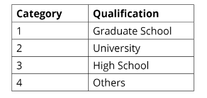
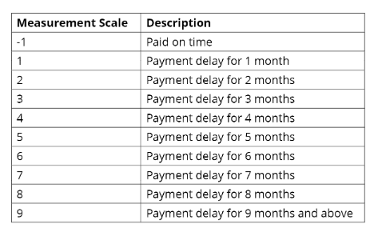

This project is dealing with univariate and bivariate analysis and crosstab function then investigating theSperman correlation between all variables. Finally, we will build a customer profie for making better informed decision. You can access and download data by clicking here
# Load required packages.
library(lubridate)
library(tidyr)
library(stringr)
library(readr)
library(cpp11)
library(forcats)
library(RcppRoll)
library(dplyr)
library(tidyverse)Sample of data
Now, we will check for NA values
summarize_group(group_cols = NULL, group_funs = NULL,across(is.numeric, ~ na_count(.x)))Let's figure out the unique count for all of these features
The education already has 7 uniques values, we will adjust its subcategory into only 4 ones as stated in the description. The R code is
%>% mutate(EDUCATION = recode(EDUCATION, `0` = 4, `1` = 1, `2` = 2, `3` = 3, `4` = 4, `5` = 4, `6` = 4))
the output is Education [1, 2, 3, 4]
Similarly, we are going to readjust 'marriage' subcategory
%>% mutate(MARRIAGE = recode(MARRIAGE, `0` = 2, `1` = 1, `2` = 2, `3` = 3))
Finally, renaming PAY_0 into PAY_1 and default as well
rename(PAY_1 = PAY_0, DEFAULT = default_payment_next_month) %>%In this phase, we will investigate the 1. Univariate analysis 2. Bivariate analysis 3. Correlation
Univariate analysis is the simplest form of analysis where we analyze each feature and try to uncover the pattern or distribution of the data.
We see that 6636 customers have defaulted out of 30000 people, around 22%
A total of 18112 females and 11888 males in this dataset.
These subcategories represent the highest qualification of education 
Let's check the exact count and percentage
The highest percentage of customers is single, then people who are married.
Bivariate analysis is done between two variables to detect the relationship,if applicable.
Now, we will perform some cross-tabulation which is useful to see the distribution and extracting insights.
Who have defaulted from customers? Around 24% of male and 20% of female customers have defaulted.
We see that single have the highest number of defaults. Let's check the percentage
Now, we check if there is relationship between these two variables. The measurement scale for the repayment status is: 
Again, we use cross-tabulation to see the pattern here
Customers who high balance amount are less likely to default when compared to customers with lower balance.
Again, the magic crosstab.
From the previous output, we can see that ages 27 and 29 had higher of defaults.
In this section, we perform correlation analysis using spearman to detect the relationship between all the variables.
AND, to check the correlation between DEFAULT and other variables
So, what can we conclude? Well, the default colums has positive correlation with PAY_1, which means that if a customer miss the first payment, he is more likely to miss the next payment. In addition, there is a negative correlation between default and PAY_AMT1, which implies that the higher the payment for the month of September 2005, the lower the chances of defaults.
In this project, we have used the univariat analysis to detect the distribution then also have performed the bivariate analysis to see the relationship among two variables. Finally, we have also investigated the spearman correlation among all variables.